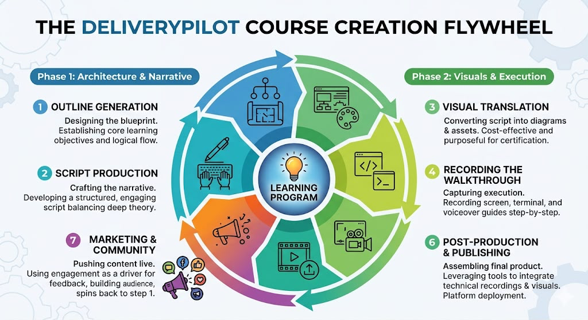

Your unified production command center for building exam prompts, exploring live architectural resilience repositories, and tracking module video learning objectives.

The DeliveryPilot Course Creation Flywheel — a continuous 7-step loop where community feedback spins straight back into the next outline.
Every course module on this certification path is built with a single, repeatable engine: the DeliveryPilot Course Creation Flywheel. The work is split into two phases and seven continuous steps. It is not a funnel that ends — it is a wheel that keeps spinning, because what the audience does with a published video directly shapes the next script. Use this guide as your orientation before diving into the Prompt Builder, Reference Repositories, and Objectives Matrix below.
Establish the core learning objectives and the logical flow of the module — the structural skeleton every later step hangs from.
Develop a structured, engaging script that balances deep theory with clarity — the spoken backbone of the video.
Turn the narrative into purposeful diagrams and visual assets — cost-effective and built specifically for certification teaching.
Record the screen, terminal, and voiceover to guide the viewer step-by-step through the implementation.
The infographic marks this slot with a camera icon — the on-camera / presenter capture that complements the screen recording.
Leverage editing tools to integrate the technical recordings and visuals, then deploy the video to its publishing platform.
Use engagement as a driver for feedback and audience-building — and this is where the wheel spins straight back to Step 1.
Because this is a flywheel model, Step 7 (Marketing & Community) feeds directly back into Step 1 (Outline Generation). Community feedback continuously refines the next iteration — or the next course — so every published video makes the next one sharper.
These production-grade demonstration repositories showcase side-by-side comparisons of resilient architectural patterns versus naive anti-patterns. Click to view source code on GitHub, experience live interactive simulators, or copy git clone commands.
Claude AI Architect Exam: API Rate Limiter & Backpressure Resilience Demo with interactive htmx scoreboard.
Orchestrates concurrent worker subagents with circuit breaking, bounded retries, and clean CLI benchmark outputs.
AI Sub agent coordination ai-agents demo proving autonomous error discovery, local recovery, and reduced token costs.
Multi-agent resilience orchestrator with zero-dependency Node.js ESM backend and interactive web visualizer.
Demonstrates mutex lock recovery and backoff strategies preventing cache stampedes under high concurrency workloads.
Side-by-side resilience demo showing how local subagent recovery eliminates coordinator bottlenecks and timeouts.
Demonstrates structured error escalation contracts where subagents return attempt logs and partial results instead of crashing.
Hub-and-spoke multi-agent orchestrator implementing duck-typed interfaces and automated GitHub Actions deployment.
Link each course video to its reference repository and check off hands-on learning objectives as you complete them. Progress is automatically saved in browser localStorage.
| Video Title | Reference Repository | Learning Objectives Checklist |
|---|---|---|
| Video 1.1: Architecture Overview | distributed-cache-stampede-demo ↗ | |
| Video 1.2: System Seams & Decoupling | subagent-escalation-resilience ↗ |
| Video Title | Reference Repository | Learning Objectives Checklist |
|---|---|---|
| Video 2.1: Subagent Pool Resiliency | resilient-subagent-pool-orchestrator ↗ | |
| Video 2.2: Hub-and-Spoke Error Triage | hub-spoke-multi-agent-orchestrator ↗ |
| Video Title | Reference Repository | Learning Objectives Checklist |
|---|---|---|
| Video 3.1: Autonomous Error Loops | error-coordination-sub-agents ↗ | |
| Video 3.2: Multi-Agent Recovery Workflows | multi-agent-error-recovery-demo ↗ |
| Video Title | Reference Repository | Learning Objectives Checklist |
|---|---|---|
| Video 4.1: API Backpressure Resilience | api-rate-limiter-resilience ↗ |
| Video Title | Reference Repository | Learning Objectives Checklist |
|---|---|---|
| Video 5.1: Production Orchestration Capstone | multi-agent-resilience-orchestrator ↗ |